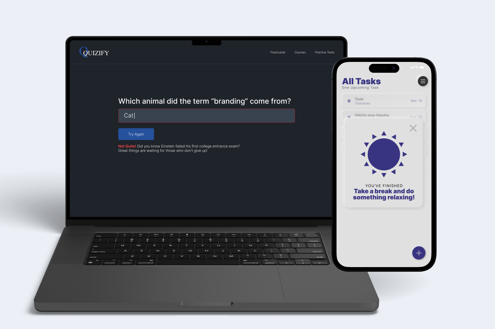
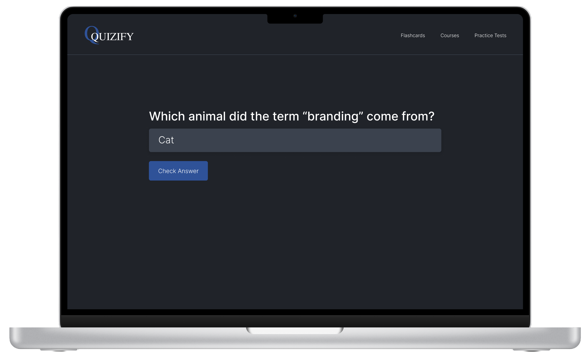
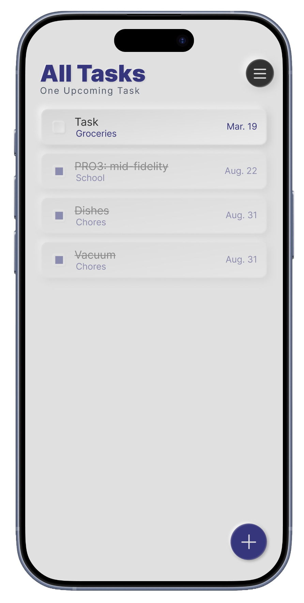
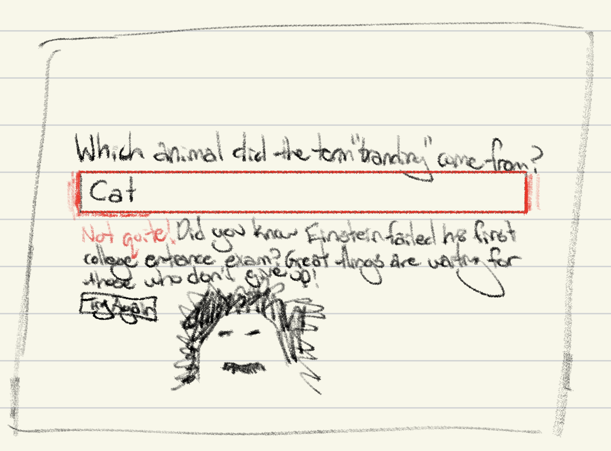
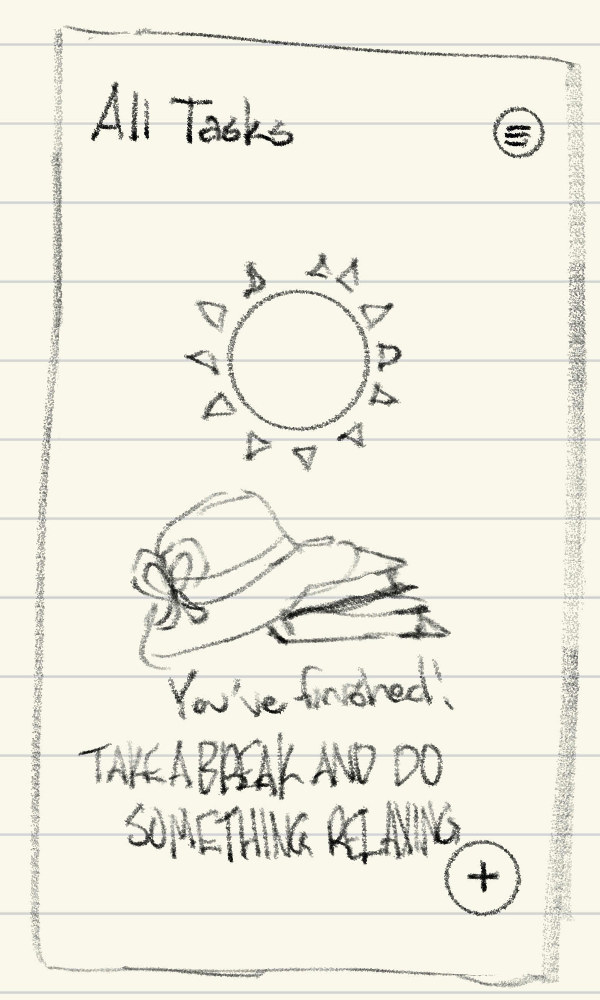
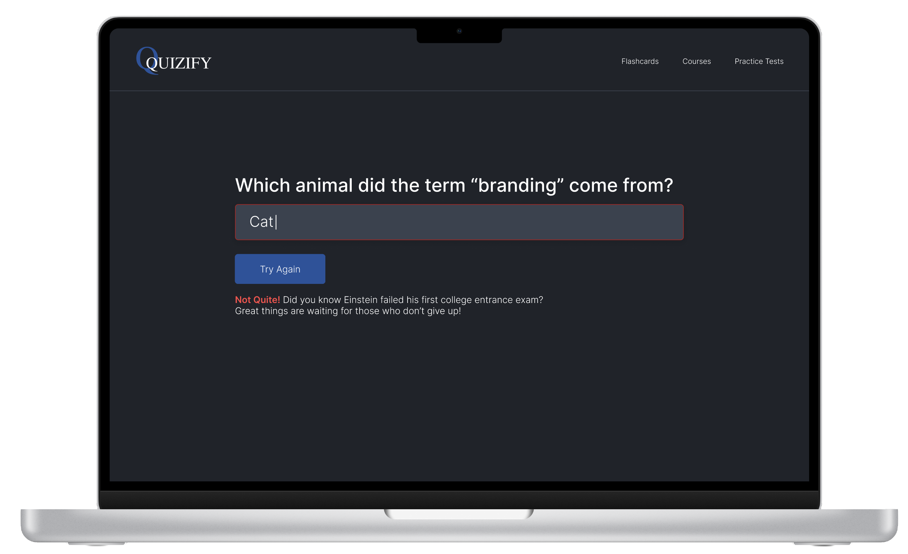
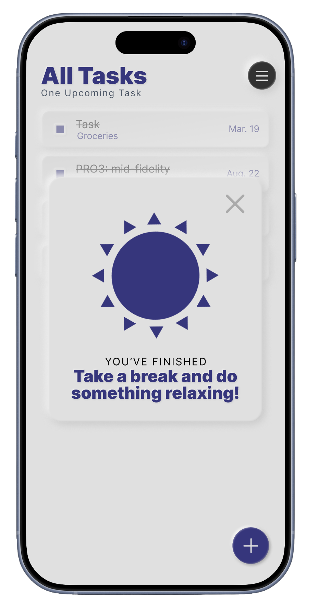

Emotional Microinteractions

Project Overview
This two-week project aimed to create a flashcard page that evoked a negative emotion and a to-do list app that evoked a positive emotion for the user.
Design Challenge
The challenge was to communicate an error without discouraging the user and make a successful action feel rewarding. Each interaction needed clear feedback that supported the user’s next step.




Approach
I began by considering a few different types of emotions I could convey and how. After deciding on my goal emotions and choosing to create a flashcard website and to-do list app, I made a few sketches to start fleshing out my ideas.
Using those sketches as a reference, I brought the designs into Figma and added interactions, letting colors, sounds, and animations help evoke the emotions.


Outcome
The flashcard interaction was designed to evoke the negative emotion of incorrectly answering a flashcard question through the red text box and shaking animation, while providing a positive association using the encouraging text and option to try again.
For the positive interaction, both the spinning sun and positive jingle worked together to convey the positive emotion of completing all the tasks on the user’s to-do list.